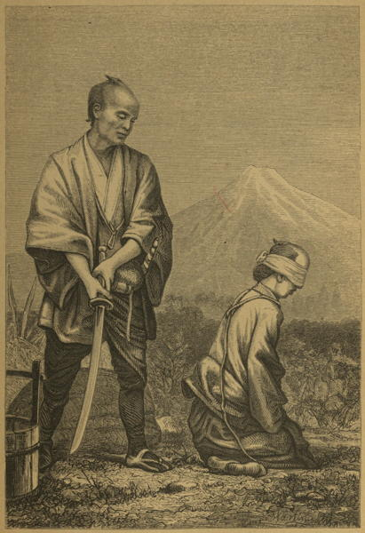

An execution
Our Life in Japan (1869)
After traversing the western suburb of Yokohama, we ascend a steep piece of road leading over the part of the bluff that pushes itself forward at this point as far as the coast-line, and just after surmounting the ridge we pass on the left hand the execution-ground. If one or more criminals have been recently decapitated here, perhaps for some crime no more heinous than theft or assault, we may see their heads exposed on a beam not far from the roadside. A revolting sight this; yet it is not so very long ago that the same might have been seen on our own Temple Bar; and as to the severity of the punishment, a detected forger would have fared no better in England forty years ago than he would now in Japan.
Round the World in 1870 (1872)
The little guard-house at the gates of the ward [in Edo] are occupied by men with two swords, officers either of the police or of the imperial army. There they sit on their soles, before their tobacco boxes, smoking a little, nodding a little, drinking now and then a little cup of tea, or writing down the reports of messengers, the transactions of their post, or whatever they may observe, ordinary or extraordinary, in the street. I have often entered their little boxes, taken a cup of tea, smoked a pipe, and amused them and myself by the various methods we took of understanding one another. Sometimes I found one surly, and perhaps not desirous of my company, but it was very rare. What ceremonies, prostrations, etiquette I there observed! What bending of backs, rubbing of knees, strong whistling inhalations of the breath, and untiring jabber of tongues! The change of guard was a long job, each party trying to outdo the other with obsequious politeness before they came to business; when that was completed, the raiment had to be arranged, the two swords placed jauntily in the obe or silk scarf worn round the waist, the various under dresses folded more gracefully over the naked bosom, the target hat placed on the head, or the fan outspread; and then the gallant gentleman would take up his book, spend another five minutes in parting salutations to his successor, ere he shuffled off to report, and then home, or to the tea-house.
Japan, the Amoor, and the Pacific (1861)
No foreigner is allowed to go beyond certain limits fixed by treaty without permission from the Japanese Government, which is given on the application of the Minister of the nation to which he belongs. It is one of the remarkable circumstances connected with Japan that whereas within a few years the Ministers of the Treaty Powers lived in fear of their lives, one can now travel through the whole country without the smallest apprehension. On my saying to Mr. Smith that I supposed I might walk about Yokohama as freely as I might about London, he replied, “Yes, with this difference, that in London you might lose your watch; in Yokohama you won’t.”
A Visit to Japan, China, and India (1877)
The view just here [in Kobe], down a promenade with European villas and gas lamps on one side, and neatly-kept grass and trees and harbour on the other, might be in England a peaceful scene, but for the thoughts suggested by the blackened hulk of an American ship laden with kerosine, burnt down to the water’s edge the other day. On the following day the mate murdered one of the crew, and has just been condemned to twenty years’ penal servitude in Japan, the American Consul here remarking that he had ‘no fixings for hanging at Kobe,’ and he (the criminal) was not worth sending all the way to America for execution.
Journal of a Lady’s Travels Round the World (1883)
On Tuesday, 14th May, 1878, after dismissing my morning class, I was met with the startling news that H.E. Ôkubo, Minister of the Interior, and the most powerful statesman in the country, had been assassinated. Shortly before nine he had, as usual, driven from his villa near the college for the imperial palace at Akasaka. Regardless of the warnings of friends, who had heard whisperings against his life, but to whom he had always answered that he would do his duty, come what might—if he was fated to die in the discharge of his duty, then he would meet death without fear—he left his house unarmed, and followed his favourite route, not through the frequented thoroughfares, where he would have been safer from attack, but along Shi-midzu-dani, a retired road just within the castle moat. Here all was quiet, the only persons visible being two students wearing straw hats, who were walking leisurely towards the carriage, with some wild flowers in their hands. But the coachman observed that the youths dropped the wild flowers, and in a second the carriage was attacked by six assassins, who hamstrung the horses, cut down the coachman, and dragging Mr Ôkubo out of the carriage, dealt him a fearful cut across the face, and then pinned him to the earth by a dirk driven through his throat. Their work accomplished, the assassins proceeded immediately to the palace, about a quarter of a mile off, and gave themselves up to the authorities as having freed their country from Ôkubo, the traitor. They were all young, their ages varying from eighteen to thirty, and had most of them been students in the military school founded at Kagoshima by Saigô, the insurgent, in revenge for whose death this deed of bloodshed had no doubt been perpetrated. Strangely enough, it was General Saigô, the insurgent’s brother, who, happening to drive up to the spot shortly after the assassination, carried away the body of the murdered man.
In the evening I visited the scene of the assassination. It was on a favourite walk of my own, about a mile from the college. On one side a steep bank surmounted by some tea-fields; on the other an uneven stretch of rank grass; behind, the inner slope of the moat embankment with the gnarled arms of pine outstretched above it; in front, 200 or 300 yards off, a hill with a few cottages embedded in its foliage—the place was strangely solitary to be in the heart of a great city. The torn appearance of the turf for about fifty yards marked the scene of the struggle. Passing the house of the deceased on my way home, I got a glimpse of the brougham, in which the deed had been done, with its stains still disfiguring it.
The Land of the Morning (1882)
The police force ... is truly a credit to Japan. Its members are almost all of the Samurai class, and conduct themselves with becoming dignity, if indeed they do not sometimes exceed that measure of the quality. As they pace their beats in their neat blue-and-white uniform, their bearing prepares us to find them one of the most efficient and most highly respected branches of the government service. At very frequent intervals throughout the city may be noticed their stations, neat buildings, usually in foreign style; and the order which they maintain is practically perfect. It is not too much to say that Tôkiyô is a safer city to dwell in than London. After dusk an Englishman is likely to run more risk in his own capital than in that of Japan. This fact may be due partly to the naturally mild disposition of the Japanese people; but there can be no doubt that it results principally from the efficiency of the police force.
The Land of the Morning (1882)
The police are always strict in their methods, and individual policemen are at times given to bullying. I have known others who are very prone to sermonising—a practice which the poor ofttimes resent. But I have also known cases where the police have been genuinely kind to persons in distress, and the philanthropic worker can always reckon on valuable help from the force. In spite of his big sword, o mawari san (the “gentleman that goes round”) has a very human heart. There are some districts in Tokyo where he needs something more than sermonising in order to preserve the peace of the city. For rough-and-tumble work he can always fall back on jiu-jitsu, a qualification which puts him on the top of the ordinary rough, who for some reason does not seem to be versed in that accomplishment. The following incident, which happened to myself, will show the efficiency of their methods. Many years ago, before I knew as much of Japan as I do now, I was one evening at supper, when a young man came to the house wanting to see me. It was winter, and there was a stove burning in my hall, so I asked him to wait until I had finished my meal, which seemed for the moment to be the most important thing in the world. After supper I talked with him. He was very plausible, and professed a great interest in Christianity, and eventually left me, giving me an address and promising to come again. The next morning, when I was going to get into my jinriksha to go to school, my rug was missing, and my servants at once concluded that winter was the season for the sneak-thief, and that I had been victimised. For myself, I found it hard to believe that a man who had expressed himself so well and so piously could have stolen my rug, and I refused to report him to the police, compromising with my conscience by writing him a post-card in English asking him if he had by mistake taken my rug. I got no answer, but three weeks later I had a visit from a policeman, who brought me back my rug. My post-card had been the means by which they were enabled to get on to the track of a well-known personage. I also got a scolding and a lecture for not reporting my case at once to the authorities. Soft-heartedness, I was told, was one of the curses of the world.
The Japanese police are not soft-hearted, and they have their enemies, especially among the (alas!) rapidly growing class of Socialists, who look upon them as oppressors. The Socialists have no affection for institutions made in Germany, and it was after Berlin models that the Japanese police force was organised.
Every-day Japan (1909)
Japan certainly has its share of thieves and pickpockets, and organisation is one of those things in which the Japanese excel. It is said that Tokyo possesses one of the most highly organised thieves guilds in the world. I have seen in Tokyo several large funerals—those of the late Prince Iwakura, of Mr. Fukuzawa, of the great actor Danjuro, of Commander Hirose, who died before Port Arthur. The late president of the Thieves’ Guild, who died some eight years ago, had a funeral which equalled any one of these as a popular demonstration of affection and esteem! He was a powerful man, and in his own way patriotic. When the troops came home in triumph from the war with China, and the country people all flocked in to see the show, the Head of the Police is said to have made representations to this potentate that it would be a most unpatriotic act to pick the people’s pockets on a day of public rejoicing. The King of Thieves accepted the suggestion, and there was no picking of pockets in Tokyo on that day.
Every-day Japan (1909)
◀ BureacracyFlora ▶